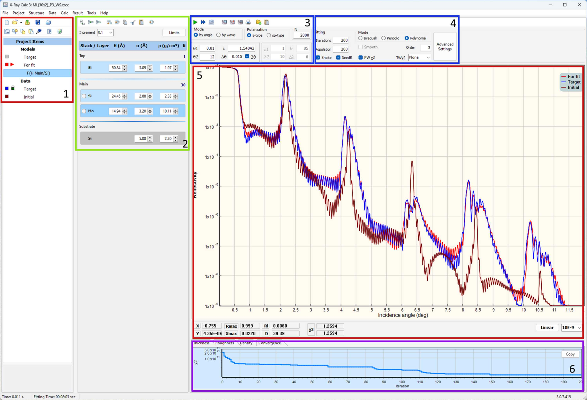
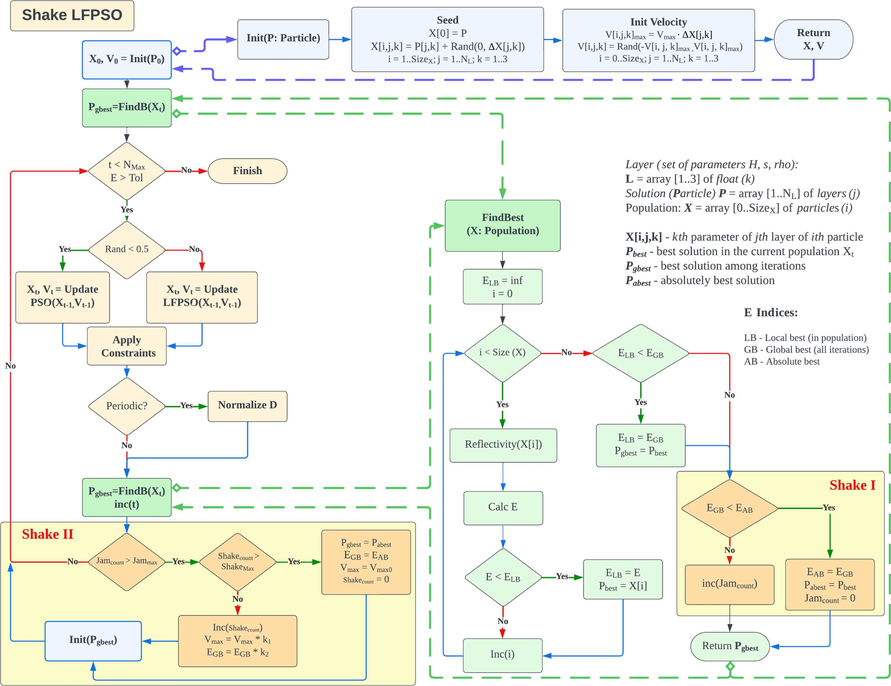
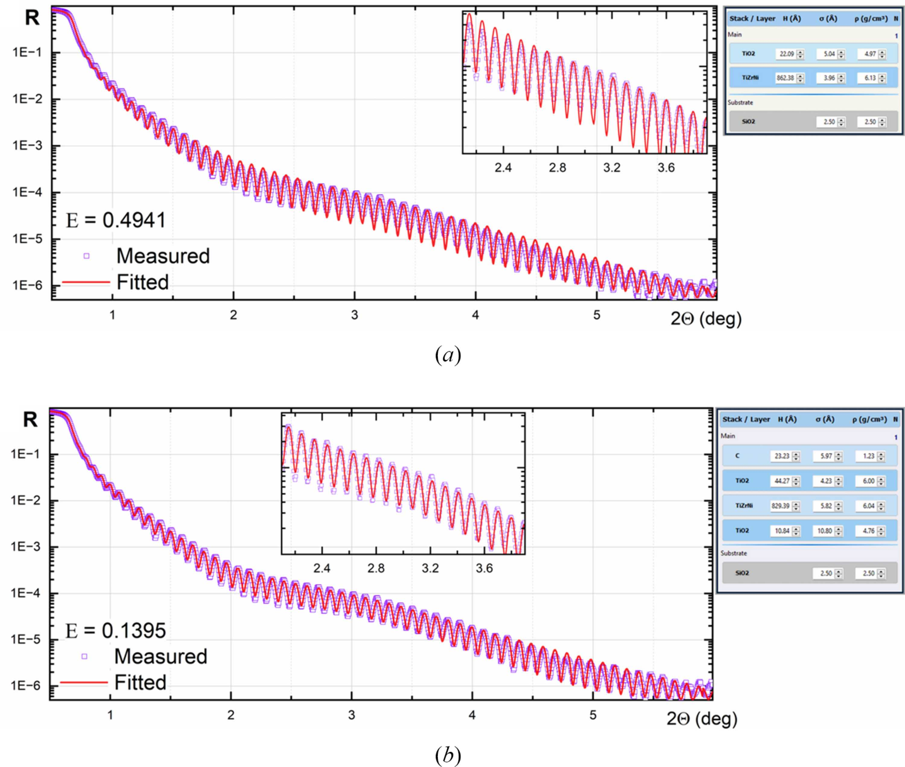

X-Ray Calc 3 — User Manual
Version 8 | Copyright © 2001–2026 Oleksiy Penkov
Table of Contents
- Introduction
- Quick Start
- Installation & First Launch
- Application Overview
- Projects
- Defining a Model
- Experimental Data
- Calculation
- Fitting (Optimization)
- Results & Export
- Charts & Visualization
- Profile Extensions
- Tools
- Application Settings
- Quick Reference
- File Formats
- Illustrative Examples
- Troubleshooting
1 Introduction
X-Ray Calc 3 (XRC3) is an open-source software package for simulating X-ray reflectivity (XRR) and solving the inverse problem of reconstructing film structures from measured XRR curves. It is designed for researchers working with X-ray optics, synchrotron radiation, and thin-film coatings.
The software employs Parratt’s exact recursive method based on the Fresnel equations to calculate XRR and incorporates specialized tools for modeling periodic multilayer structures (PMMs). Refractive indices of materials are computed using the Henke tables of atomic scattering factors (Henke et al., 1993). The computational algorithm has been validated against the IMD software (Windt, 1998), with accumulated variances consistently below 0.5%.
The application allows you to:
- Build multilayer structural models composed of stacks and individual layers
- Calculate theoretical X-ray reflectivity curves as a function of incidence angle (θ) or wavelength (λ)
- Load experimental reflectivity data and compare it with theoretical predictions
- Automatically fit model parameters to experimental data using the Shake LFPSO (Lévy Flight Particle Swarm Optimization) algorithm
- Visualize results through interactive charts with logarithmic/linear scaling
- Define parameter profiles (polynomial, exponential, tabulated) across periodic structures
- Manage materials via the built-in Henke atomic form factor database
2 Quick Start
This section provides a hands-on introduction to X-Ray Calc 3. The distribution includes several demonstration projects in the Examples folder — open one to explore the interface before building your own models.
Exploring the Demo Projects
- Click Open and navigate to the Examples folder.
- Select a project file (
.xrcx). - Go to the Computation tab and click Run (or press F5). You can also use Calc All (F12) to calculate all models at once.
Navigating the Interface
- Double-click a model name in the Project Items list to open its Properties dialog (name, color, description). The same dialog is available from the right-click context menu.
- Double-click a layer to open the Layer Properties dialog, where you can change material, thickness, roughness, and density.
- Double-click a stack header to open the Stack Properties dialog, where you can rename the stack and change the number of periods.
- Use the Stack and Layer toolbar panels to add, insert, or delete structural elements.
Creating a Model from Scratch
- Create a new project (File > New Project).
- Select Model 1 in the project tree.
- Add a stack: Structure > Add Stack (or use the toolbar). In the dialog, set the stack name (e.g., “Main”) and the number of periods (default: 1 for non-periodic structures).
- Select the stack by clicking its title in the structure panel.
- Add layers: click Add Layer (or Structure > Add Layer). Fill in the material (click “...” to select from the Materials Database), thickness, roughness, and density. Repeat for each layer.
- Calculate the reflectivity: press F5 (or Calc > Calculate).
Calculation Settings
- Mode: Reflectivity can be calculated as a function of grazing angle or wavelength.
- Polarization: Use s-polarization for hard X-rays at low grazing angles (below 20°) — this is significantly faster. Use sp-polarization for larger angles or softer radiation.
- Number of points (N): Controls calculation precision. Calculation time scales linearly with N.
- Angle range: Set with θ1 and θ2. Check 2θ for θ-2θ geometry. dθ sets the instrumental beam divergence.
- Scale: Toggle between Linear and Log scale using the toolbar button. Set a background level if needed.
- Legend: Click items in the chart legend to toggle curve visibility.
Exporting Results
- The Export button on the Result panel saves the calculated curve to an ASCII file or copies it to the clipboard.
- The Save button on the Plot panel saves the chart as a bitmap image.
3 Installation & First Launch
System Requirements
- Windows 10 or later (64-bit recommended)
- Minimum 4 GB RAM (8 GB recommended for large models)
- Multi-core CPU recommended for parallel computation
Data Storage
On first launch, X-Ray Calc 3 creates a working directory:
- Default location:
%APPDATA%\X-RayCalc3\ - Portable mode: If a file named
uselocaldataexists in the application folder, all data is stored locally next to the executable.
The working directory contains:
| File / Folder | Purpose |
|---|---|
xrc3.ini | Application settings |
Henke/ | Atomic form factor tables |
Backup/ | Auto-save and backup projects |
Output/ | Fitting results (when auto-save is enabled) |
Benchmark/ | Benchmark model files |
Jobs/ | Batch job definitions |
File Association
To associate .xrcx project files with X-Ray Calc 3, go to File > Settings > Paths and Files and click Register file associations (xrcx).
4 Application Overview
Main Window Layout

The primary window comprises four key panels (see Figure 1). The first panel, Project Items (1), showcases the contents of the current project. A project can organize an unlimited number of theoretical models and experimental curves into well-structured folders. The Structure panel (2) functions as a visual depiction of the layered model and provides easy access to all parameters linked with the structural model. The right side contains XRR calculation parameters (3) and Fitting parameters (4) at the top, the main XRR curve plot (5) in the center, and Distributions / Convergence charts (6) at the bottom.
Left Column — Project Panel
- File Toolbar: New, Open, Reopen, Save, Print
- Project Toolbar: Add Model, Export, Copy, Paste, Edit Properties, Add Extension, Copy Image, Print, Delete
- Project Tree: Hierarchical view of all models, data sets, and folders in the current project
- Description: Read-only text memo showing the description of the selected item
Middle Column — Structure Panel
- Structure Toolbar: Stack operations (Add, Insert, Delete) and Layer operations (Add, Insert, Copy, Cut, Paste, Delete)
- Increment Selector: Step size for quick parameter adjustment (10, 5, 1, 0.25, 0.1, 0.01)
- Set Fit Limits Button: Opens the parameter bounds editor for fitting
- Visual Structure Editor: Interactive graphical representation of the layer structure — shows Ambient, Stacks (with N repetitions), individual Layers (with H, σ, ρ values), and Substrate. Double-click elements to edit properties; click parameter values for in-place editing.
Right Column — Working Area
- Calculation Toolbar: Load Data, Paste Data, Calculate, Save Result, Copy Result, Batch Execute, Auto Fit, Stop
- Settings Panel: Calculation mode and parameters (left half) alongside Fitting mode and parameters (right half)
- Main Chart: Interactive reflectivity plot (θ or λ vs. reflectivity)
- Chart Info Bar: Cursor position, peak detection, area integration, χ² values
- Chart Pages: Tabbed sub-charts for parameter distributions (Thickness, Roughness, Density, Profile, Fitting Progress)
Status Bar
Displays calculation time, fitting time, application version, and platform (x64).
Menu Bar
| Menu | Purpose |
|---|---|
| File | Project management (New, Open, Save, Settings, Exit) |
| Project | Model operations (New Model, Duplicate, Copy, Paste, Add Folder) |
| Structure | Stack and layer editing (Add, Insert, Delete, Copy, Paste, Cut) |
| Data | Experimental data operations (Load, Paste, Normalize, Smooth, Trim, Export) |
| Calc | Calculation and fitting (Calculate, Calculate All, Auto Fitting, Batch Jobs, Benchmark) |
| Result | Export results (Save, Copy to Clipboard, Copy as BMP/WMF) |
| Tools | Material management (Create Material, Edit Henke Table) |
| Help | User Manual, About dialog |
5 Projects
Project Files
Projects are saved as .xrcx files. Internally, an .xrcx file is a ZIP archive containing:
project.dsc— project metadataparams.dsc— model structure definitions- Associated experimental data files
Creating a New Project
- Choose File > New Project (or click the New toolbar button).
- An empty project is created with no models or data.
Opening a Project
- File > Open Project — browse for a
.xrcxfile - File > Recent Projects — select from up to 10 recently opened projects
- Open toolbar button — click the dropdown arrow for recent projects
Saving a Project
- File > Save Project — save to the current file
- File > Save Project As — save with a new name/location
Auto-Save
When enabled in Settings, the application periodically saves a backup to AutoSave.xrcx in the temp directory. This provides crash recovery — on next launch, you will be prompted to restore the auto-saved project.
Project Locking
When a project is open, a lock file (temp.lock) prevents simultaneous access from another instance. The lock is released when the project is closed.
Project Tree Organization
The project tree shows items in a hierarchy:
- Model Group: Contains all structural models
- Individual models (each with its own layer structure and calculation parameters)
- Extensions (profile functions attached to models)
- Data Group: Contains experimental data sets
- Folders: User-created organizational folders
6 Defining a Model
Creating a Model
- Choose Project > New Model or click the Add Model toolbar button.
- A new model appears in the project tree with a default empty structure.
Duplicating a Model
Select a model in the project tree and choose Project > Duplicate Model to create an exact copy, including all layers, stacks, and parameters.
The Structure Editor

The structure editor is a visual panel in the middle column that displays the current model’s layer structure. It shows:
- Ambient (top) — the medium above the structure (typically vacuum or air)
- Stacks — repeating periodic units containing one or more layers
- Individual Layers — single layers outside of stacks
- Substrate (bottom) — the base material
Each element in the structure is displayed as a colored block with its parameters.
Terminology
- Material — the chemical composition of a layer (e.g. Mo, SiO2, B4C). Used to look up atomic scattering factors, atomic weights and table densities in the embedded database.
- Layer — the basic geometrical entity. A layer consists of a material and has three parameters: thickness (H), roughness (σ) and density (ρ).
- Stack — a set of layers. It can be single (non-repeating) or periodic (repeated N times).
- Structure — a set of stacks, including a substrate. The substrate is a special stack consisting of a single layer with infinite thickness.
Stacks (Periods)
A stack represents a periodic multilayer structure — a group of layers repeated N times.
Adding a stack
- Select the model in the project tree.
- Choose Structure > Add Stack or use the structure toolbar.
- The Stack Properties dialog opens with:
- Stack name: A label for the stack
- N: Number of repetitions (periods)
Editing a stack
Double-click the stack header in the structure editor to open the Stack Properties dialog.
Layers
Each layer has three primary parameters:
| Parameter | Symbol | Unit | Description |
|---|---|---|---|
| Thickness | H | Å (Angstrom) | Physical thickness of the layer |
| Roughness | σ | Å (Angstrom) | Interface roughness (RMS) |
| Density | ρ | g/cm³ | Material density |
Adding a layer
- Select a stack or model in the structure editor.
- Choose Structure > Add Layer or use the toolbar.
- The Layer Properties dialog opens with fields for material, H, σ, and ρ.
Layer operations (via Structure menu or toolbar)
- Insert Layer — insert before the selected position
- Copy Layer — copy to internal clipboard
- Paste Layer — paste from internal clipboard
- Cut Layer — copy and delete
- Delete Layer — remove the layer
Quick Parameter Editing
In the structure editor, you can adjust layer parameters directly:
- Click a parameter value to edit it in-place
- Use the Increment selector to set the step size for fine-tuning
- Changes are applied immediately; if Auto-Calc is enabled, the reflectivity recalculates in real time
Undo
Choose Structure > Undo Structure Changes to revert the last structural modification.
Model Text (JSON)
For advanced users, Structure > Edit Model Text opens a JSON editor showing the raw model definition.
7 Experimental Data
Loading Data from File
- Select a model or data item in the project tree.
- Choose Data > Load from File or click the Load Data toolbar button.
- Browse for a text file containing two-column data (angle/wavelength and reflectivity).
- The data appears as a series on the main chart.
Pasting Data from Clipboard
- Copy two-column data from another application (e.g., a spreadsheet).
- Choose Data > Paste from Clipboard or click the Paste Data toolbar button.
- The data is imported into the current model.
Data Format
The expected data format is a two-column ASCII text file:
- 2 columns with TAB as the column separator
- 3-row header (non-numeric lines are skipped automatically)
- Column 1: Angle (degrees) or wavelength (Angstroms)
- Column 2: Reflectivity (typically 0 to 1)
Example:
Sample: Mo/Si multilayer
Date: 2024-01-15
Theta Reflectivity
0.100 1.000000
0.200 0.999850
0.300 0.998200
0.500 0.956300
1.000 0.523100
2.000 0.012450
5.000 0.000023Data Processing
Normalize
Data > Normalize opens a dialog where you can manually set the normalization factor. Data > Normalize (Auto) automatically normalizes the data.
Smooth
Data > Smooth applies a Savitzky-Golay smoothing filter to reduce noise while preserving peak shapes.
Trim
Data > Trim removes the low-reflectivity tail of the data.
Data Conditioning Walkthrough
Raw experimental data often requires conditioning before fitting:
Step 1 — Normalize. Compare experimental and calculated intensities at a known point. Apply via Data > Normalize.
Step 2 — Smooth. Apply smoothing to reduce noise: Data > Smooth.
Step 3 — Trim. Remove data points outside the useful range: Data > Trim.
Exporting Data
- Data > Copy to Clipboard — copy data in tab-separated format
- Data > Export to File — save processed data to a text file
8 Calculation
Algorithm
XRC3 uses the Parratt exact recursive method for simulating specular X-ray reflectivity. A Gaussian distribution is assumed for interface roughness. The refractive indices of materials are calculated using the Henke tables of X-ray scattering factors.
Calculation Modes
Theta Mode (by angle)
Calculates reflectivity as a function of incidence angle at a fixed wavelength.
| Parameter | Description |
|---|---|
| θ1 | Start angle (degrees) |
| θ2 | End angle (degrees) |
| λ (Å) | Fixed wavelength in Angstroms (default: 1.54043 Å, Cu Kα) |
| Δθ | Angular resolution / step size (degrees) |
| 2θ | When checked, angles are in 2θ convention |
Lambda Mode (by wavelength)
Calculates reflectivity as a function of wavelength at a fixed incidence angle.
| Parameter | Description |
|---|---|
| λ1 | Start wavelength (Angstroms) |
| λ2 | End wavelength (Angstroms) |
| θ | Fixed incidence angle (degrees) |
| Δλ | Wavelength step size (Angstroms) |
Polarization
- s-type: S-polarization (TE mode)
- sp-type: Mixed σ/π polarization
Running a Calculation
- Select a model in the project tree.
- Set the calculation parameters.
- Choose Calc > Calculate or click the Calc Run toolbar button.
- The calculated reflectivity curve appears on the main chart.
Multi-Threading
The angular range is divided into segments matching CPU cores for parallel computation. Configure in File > Settings > Calc & Fit.
9 Fitting (Optimization)
Fitting adjusts model parameters to minimize the difference between calculated and experimental reflectivity curves. X-Ray Calc 3 uses the Shake LFPSO (Lévy Flight Particle Swarm Optimization) algorithm.


Prerequisites for Fitting
- A defined model with initial parameter estimates
- Experimental data loaded into the project
- Fit limits set for each adjustable parameter
Setting Fit Limits
Click Set Fit Limits in the structure toolbar. Only parameters with Min ≠ Max will be adjusted during fitting.
Fitting Modes
| Structure Representation | Applicability | Computation Time |
|---|---|---|
| Regular (Irregular) | Non-periodic coatings | Long |
| Periodic | Periodic multilayer mirrors | Short |
| Periodic with arbitrary deviations | Supermirrors | Long |
| Polynomial distributions | PMMs with gradual parameter change | Moderate |
Basic Fitting Parameters
| Parameter | Description | Default |
|---|---|---|
| Iterations | Maximum optimization iterations | 100 |
| Population | Number of particles in the swarm | 100 |
| Shake | Enable perturbation to escape local minima | Checked |
| SeedR | Seed particles from parameter range | Checked |
| Smooth | Apply smoothing to fitted profiles | Unchecked |
| PW χ² | Point-weighted chi-square | Checked |
| TW χ² | Theta-weighted chi-square | None |
Advanced Fitting Settings
| Parameter | Description | Default |
|---|---|---|
| Tolerance | Target cost function value | 0.005 |
| SHmax | Maximum consecutive shakes | 3 |
| Jmax | Iterations without improvement before shake | 1 |
| Vmax | Maximum particle velocity factor | 0.3 |
| ω1 | Velocity scale factor | 0.3 |
| ω2 | Velocity reducing factor | 0.1 |
| k1 | Velocity shake coefficient | 1.41 |
| k2 | Cost function shake coefficient | 1.41 |
Running a Fit
- Ensure a model with experimental data and fit limits is selected.
- Configure fitting mode and parameters.
- Choose Calc > Auto Fitting or click the Fast Forward toolbar button.
- Fitting stops when iterations are exhausted, tolerance is met, or you click Stop.
Understanding the Cost Function
Lower is better — E = 0 means a perfect fit. Calculated on a logarithmic scale to give equal weight to both high and low reflectivity regions.
10 Results & Export
Saving Results
Result > Save Results saves the calculated reflectivity data to a text file.
Copying to Clipboard
- Result > Copy to Clipboard — tab-separated text
- Result > Copy as BMP — bitmap image
- Result > Copy as WMF — Windows Metafile (vector format)
Auto-Save Results
When enabled in Settings, fitting results are automatically saved to the configured Output directory after each fitting run.
11 Charts & Visualization
Main Reflectivity Chart
- Zoom: Click and drag to select a zoom region
- Pan: Right-click and drag
- Reset zoom: Double-click
- Scale toggle: Switch between linear and logarithmic Y-axis
Chart Pages
Below the main chart are tabbed sub-charts: Thickness (H), Roughness (σ), Density (ρ), Profile, and Fitting Progress.
Peak Analysis
- Peak Max: Maximum reflectivity value and position
- Area: Integrated area under the peak
- Period: Estimated multilayer period from peak spacing
12 Profile Extensions
Profile extensions define how layer parameters vary across a periodic structure.
Profile Types
| Function | Formula | Use Case |
|---|---|---|
| Polynomial | a0 + a1x + a2x² + … | General-purpose gradient |
| Exponential | a0 · ea1x | Exponential growth/decay |
| Parabolic | a0 + a1x² | Symmetric variation |
| SQRT | a0 + a1√x | Gradual initial change |
| Table | (position, value) pairs | Arbitrary profile shapes |
13 Tools
Create New Material
Tools > Create New Material adds a custom material to the Henke database by computing atomic form factors from constituent elements.
Edit Henke Table
Tools > Edit Henke Table opens the Henke Table Editor for viewing and modifying atomic scattering factor tables.
Benchmark
Calc > Benchmark measures calculation performance by running a standard reflectivity calculation multiple times.
14 Application Settings
Access via File > Settings. Sections: Paths and Files, Behavior, Interface, Calc & Fit, Graphics.
Behavior
| Setting | Default |
|---|---|
| Automatically calculate when opening project | On |
| Live update structure panel during fitting | Off |
| Automatically save results to output folder | Off |
| Automatically check for updates | Off |
15 Quick Reference
Toolbar Quick Reference
| Button | Action |
|---|---|
| New | Create a new project |
| Open | Open an existing project |
| Save | Save the current project |
| Add Model | Add a new model |
| Load Data | Load experimental data |
| Calc Run | Calculate the selected model |
| Fast Forward | Start auto-fitting |
| Stop | Abort calculation or fitting |
| Scale | Toggle linear/log chart scale |
Keyboard Shortcuts
| Key | Action |
|---|---|
| F1 | Open User Manual |
16 File Formats
Project File (.xrcx)
A ZIP archive containing project.dsc, params.dsc, and embedded experimental data files.
Experimental Data Files
Plain text, two columns separated by tabs or spaces. Lines starting with # are comments.
Henke Tables
Binary files in the Henke/ directory containing wavelength-dependent atomic form factors (f1, f2).
Settings File (xrc3.ini)
Standard Windows INI file. Sections: [Path], [Window], [Options], [Graphics], [Calc].
17 Illustrative Examples
The following examples from the literature demonstrate XRC3 capabilities (Penkov et al., 2024).
Single-Layer Coating

Periodic X-Ray Mirrors

Polynomial Fitting on Graded PMMs

Supermirror

18 Troubleshooting
Application crashes without error message
Solution: Use the x64 version (XRayCalc3.x64.exe). The x32 version is limited to ~2 GB RAM.
Choosing between x32 and x64
| Version | Advantage | Limitation |
|---|---|---|
| x32 | ~2× faster calculation | Limited to ~2 GB RAM |
| x64 | Handles large models | Slower for small models |
Fitting does not converge
- Widen the fit limits
- Increase population size
- Increase iterations
- Enable Shake
- Check initial model
- Try a different fitting mode
Calculation is slow
- Ensure multi-threading is enabled
- Reduce number of points (N)
- Use x32 for small models (~2× faster)
- Use x64 only for large models
Material not found
Check spelling. Use Tools > Create New Material to add custom compounds.
Chart appears empty after calculation
Check angle/wavelength range. Try switching between linear and logarithmic scale. Verify the model has at least one layer.
Data import fails
Ensure plain text with two numeric columns. Check decimal separators match your locale. Try clipboard paste instead.